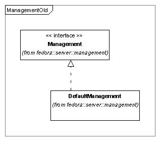
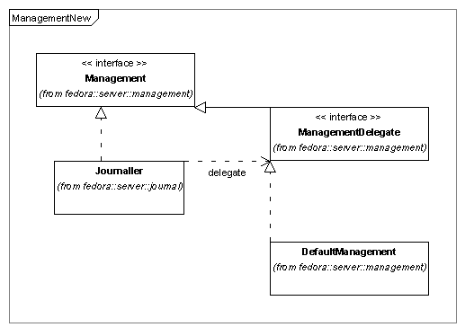
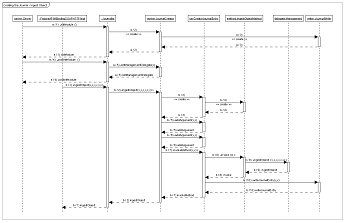
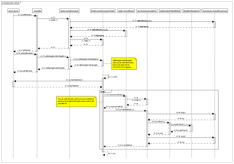

The Fedora configuration now includes an optional Journalling module. This module creates Journal files which capture all calls against the Fedora Management API – or rather, all calls that have changed the state of the repository. The Journal files can be replayed against another Fedora instance with the same initial state, resulting in a repository which is a mirror of the original.
The Journalling module can increase Fedora availability in one of two ways: server recovery to the level of the most recent action, or the creation of a standby server for fast failover.
Without Journalling, a Fedora environment which fails for any reason can only be recovered to the most recent backup. Actions which have occurred since the backup are lost. With Journalling, the environment can be reconstructed to the point of the failure. All successful actions will be recovered, and the server can then resume normal operation.
It is also possible to have two Fedora servers operating in a "leader/follower" configuration. The leading server handles requests from users, and creates Journal files to reflect those requests. The following server processes each Journal file as it is completed. If the leading server should fail, the following server will very quickly be ready to take over the handling of user requests.
When recovering from a failure, the recovered repository must match the original in all significant ways. PIDs must match those that were initially generated. Timestamps in "create date" or "last modified" fields must reflect the date of the original API call, not the date of the recovery. Generation of PIDs must resume with the same sequence as the original server would have used.
The need for deterministic Journalling places limits on Fedora's ability to conduct simultaneous multi-threaded operations. When the Journal module is installed, it synchronizes the calls to the Management module in order to insure that those calls can be replayed in the correct sequence.
The Journal files contain the information that is needed to reconstruct the repository, and some extra information as well. These additional fields are included to permit analysis of the Journal files. Tools that scan the Journal files can easily determine the user and IP address that initiated each API call, as well as the time of the call. Other information may be added to the Journal files to assist in analyzing the server operation.
The Journalling module currently writes Journal files to a disk directory, and recovers from that same directory. If a "leader/follower" configuration exists with Fedora instances on different servers, those servers must somehow share the directory where the Journal files are written.
The Journalling module is designed to permit additional transport mechanisms for Journal data, and current plans call for a transport that uses JMS (Java Message Service) instead of file-based transport. No date has been set for this enhancement.
The Journalling module uses the Decorator design pattern. The Journaller module implements the Management interface, and adds functionality to each of the methods of that interface before delegating the calls to another Management instance.
The design pattern is slightly modified, since the convention in Fedora is that each module will implement its own interface. A new interface was created, called ManagementDelegate, and the Journaller requires a module that implements that interface to use as its delegate.
Here is a class diagram for the Management interface, and its implementing class, followed by an excerpt from fedora.fcfg, showing how the module is configured (without Journalling).
Class diagram for Management module
Configuring the Management module within fedora.fcfg:
<module role="fedora.server.management.Management"
class="fedora.server.management.DefaultManagement">
</module>The next class diagram shows the addition of the Journaller module, followed by another excerpt from fedora.fcfg with both Journaller and Management modules. Notice how the Journaller class implements the Management module interface, while the DefaultManagement class has moved to implement ManagementDelegate.
Class diagram for the Journaller and Management modules
Configuring the Journaller and Management modules within fedora.fcfg:
<module role="fedora.server.management.Management"
class="fedora.server.journal.Journaller">
</module>
<module role="fedora.server.management.ManagementDelegate"
class="fedora.server.management.DefaultManagement">
</module>The Journal operates in one of two modes: "normal", or "recover".
In normal mode, each call to the Management API is intercepted and passed to the ManagementDelegate. The arguments and the return value from that call are recorded in the Journal.
In recover mode, a worker thread processes the Journal files and makes appropriate calls to the ManagementDelegate. Any call from a user is blocked, returning an Exception message.
One might expect a third mode of operation, to be used when following another server. In fact, this is implemented using recover mode with a different JournalReader implementation class. This is illustrated in the section "Configurations in fedora.fcfg"
The behavior of the Management module changes slightly when it is acting as a delegate for the Journaller module. This is accomplished by adding a "recovery" namespace to the Context object that is passed to the methods of the Management module.
In normal mode, the Journaller stores information in the recovery namespace of the Context. This information is needed in addition to the arguments and return value of the API method called, in order to fully capture the state of the repository for recovery.
When recovering, the Management module will look for this additional information, and use it when executing the API method.
For example, if the IngestObject method is called and the ingested FOXML does not supply a PID for the object, Fedora will generate one. However, to insure that the same PID is assigned during recovery, the Journaller records the PID, and on recovery the Management module will assign the recorded PID to the new object, instead of generating a new PID which might be different.
Each Journal file is tagged with a "repository hash" value, which indicates the internal state of the repository when the Journal file was created. In recover mode, the hash value in the file is compared to the hash value of the new repository. If the values do not match, the recovery is aborted.
The repository hash value insures that Journal files are not applied in the wrong order, and that no files are skipped during the recovery. Either of these problems will be detected by comparing the hash values.
A basic concept of Journalling is the repeatability of actions. If a series of actions is executed on two Fedora servers, the result must be two equivalent Fedora repositories.
The need for repeatability limits Fedora's ability to use multi-threading in API calls. Multi-threaded operation is non-deterministic by nature, but a Journal file must record a series of events must occur in a particular order, and that order must reflect the actual execution of the events. Otherwise, it would be possible to execute two actions successfully, and to have those same two actions fail on another server, because they were executed in a different order.
By careful implementation, this single-threaded sequencing can be reduced to the smallest possible interval, but it cannot be eliminated without breaking the repeatability of the Journal.
Some components of the Journaller module are dynamically loaded at server startup time, based on parameter values. The storage and transport mechanisms for the Journals are controlled by these components. It is fairly simple to implement an alternative file structure for the Journal files, or to use a message-based transport instead of simple flat files.
The recovery log that is generated by the Journaller is controlled by a similar set of parameters, and can be extended or replaced in the same manner.
These options are recognized by the Journaller module, or by its configurable components. See the section "Configurations in fedora.fcfg" for examples of how the options are used in fedora.fcfg
These options are recognized by the Journaller module, and can be used with any configurable components.
fedora.server.journal.JournalWriter. Required for
normal mode. There is no default. Note that this component may
require additional parameters.
fedora.server.journal.JournalReader. Required for
recover mode. There is no default. Note that this component may
require additional parameters.
fedora.server.journal.recoverylog.JournalRecoveryLog.
Required for recover mode. There is no default. Note that this
component may require additional parameters.
These options are recognized by the reader and writer components in the
fedora.server.journal.readerwriter.singlefile package.
These options are recognized by the reader and writer components in the
fedora.server.journal.readerwriter.multifile package.
These options are recognized by all of the current RecoveryLog components.
This section contains some details of the Journaller implementation, including how to configure it, what it produces, and how it operates.
These excerpts from fedora.fcfg show three different examples of how to configure the Journaller module.
Configuring for normal mode:
<module role="fedora.server.management.Management"
class="fedora.server.journal.Journaller">
<param name="journalWriterClassname"
value="fedora.server.journal.readerwriter.multifile.MultiFileJournalWriter"/>
<param name="journalDirectory" value="C:\\FedoraJournalFiles"/>
</module>
<module role="fedora.server.management.ManagementDelegate"
class="fedora.server.management.DefaultManagement">
</module>Configuring for recover mode:
<module role="fedora.server.management.Management"
class="fedora.server.journal.Journaller">
<param name="journalMode" value="recover"/>
<param name="journalReaderClassname"
value="fedora.server.journal.readerwriter.multifile.MultiFileJournalReader"/>
<param name="journalDirectory" value="C:\\FedoraJournalFiles"/>
<param name="archiveDirectory" value="C:\\FedoraArchiveFiles"/>
<param name="recoveryLogLevel" value="high"/>
<param name="journalRecoveryLogClassname"
value="fedora.server.journal.recoverylog.UnbufferedJournalRecoveryLog"/>
<param name="recoveryLogFilename" value="C:\\fedora.recovery.log"/>
</module>
<module role="fedora.server.management.ManagementDelegate"
class="fedora.server.management.DefaultManagement">
</module>Configuring for recover mode in a "following" server:
<module role="fedora.server.management.Management"
class="fedora.server.journal.Journaller">
<param name="journalMode" value="recover"/>
<param name="journalReaderClassname"
value="fedora.server.journal.readerwriter.multifile.MultiFileFollowingJournalReader"/>
<param name="journalDirectory" value="C:\\FedoraJournalFiles"/>
<param name="archiveDirectory" value="C:\\FedoraArchiveFiles"/>
<param name="recoveryLogLevel" value="high"/>
<param name="journalRecoveryLogClassname"
value="fedora.server.journal.recoverylog.UnbufferedJournalRecoveryLog"/>
<param name="recoveryLogFilename" value="C:\\fedora.recovery.log"/>
</module>
<module role="fedora.server.management.ManagementDelegate"
class="fedora.server.management.DefaultManagement">
</module>This shows the possible content of an entry in the Journal file. The Context structure was simplified for this example. In normal operation a Context will probably contain more keys and values.
<?xml version="1.0" encoding="UTF-8"?>
<FedoraJournal repositoryHash="3|2,1,0" timestamp="2006-06-15T09:45:35.683-0400">
<JournalEntry method="purgeObject" timestamp="2006-06-15T09:45:35.683-0400"
clientIpAddress="127.0.0.1" loginId="fedoraAdmin">
<context>
<password>fedoraAdmin</password>
<noOp>false</noOp>
<now>2006-06-15T09:45:35.683-0400</now>
<multimap name="environment">
<multimapkey name="urn:fedora:names:fedora:2.1:environment:httpRequest:authType">
<multimapvalue>BASIC</multimapvalue>
</multimapkey>
<multimapkey name="urn:fedora:names:fedora:2.1:environment:httpRequest:serverIpAddress">
<multimapvalue>127.0.0.1</multimapvalue>
</multimapkey>
<multimapkey name="urn:fedora:names:fedora:2.1:environment:httpRequest:serverPort">
<multimapvalue>8080</multimapvalue>
</multimapkey>
<multimapkey name="urn:fedora:names:fedora:2.1:environment:httpRequest:method">
<multimapvalue>POST</multimapvalue>
</multimapkey>
<multimapkey name="urn:fedora:names:fedora:2.1:environment:httpRequest:protocol">
<multimapvalue>HTTP/1.1</multimapvalue>
</multimapkey>
</multimap>
<multimap name="subject">
<multimapkey name="fedoraRole">
<multimapvalue>administrator</multimapvalue>
</multimapkey>
<multimapkey name="urn:fedora:names:fedora:2.1:subject:loginId">
<multimapvalue>fedoraAdmin</multimapvalue>
</multimapkey>
</multimap>
<multimap name="action"></multimap>
<multimap name="resource"></multimap>
<multimap name="recovery"></multimap>
</context>
<argument name="pid" type="string">demo:99</argument>
<argument name="message" type="string">That dog's gonnna die.</argument>
<argument name="force" type="boolean">false</argument>
</JournalEntry>
</FedoraJournal>
These examples show excerpts from recovery logs that were created with different "recoveryLogLevel" settings.
Excerpt of recovery log, recoveryLogLevel=low:
2006-06-15T09:45:36.605-0400: Event: method='getNextPid',
file='C:\fedoraJournal20060615.134531.152Z',
entry='2006-06-15T09:45:30.167-0400'
2006-06-15T09:45:36.714-0400: Call complete:getNextPidExcerpt of recovery log, recoveryLogLevel=medium:
2006-06-15T09:45:36.605-0400: Event: method='getNextPid',
file='C:\fedoraJournal20060615.134531.152Z',
entry='2006-06-15T09:45:30.167-0400'
arguments
numPids='4'
namespace='newPIDs'
2006-06-15T09:45:36.714-0400: Call complete:getNextPid
Excerpt of recovery log, recoveryLogLevel=high:
2006-06-15T09:45:36.605-0400: Event: method='getNextPid',
file='C:\fedoraJournal20060615.134531.152Z',
entry='2006-06-15T09:45:30.167-0400'
context=fedora.server.journal.entry.JournalEntryContext
environmentAttributes
urn:fedora:names:fedora:2.1:environment:httpRequest:authType
BASIC
urn:fedora:names:fedora:2.1:environment:httpRequest:security
urn:fedora:names:fedora:2.1:environment:httpRequest:security-insecure
urn:fedora:names:fedora:2.1:environment:currentDate
2006-06-15Z
urn:fedora:names:fedora:2.1:environment:currentTime
13:45:30.027Z
urn:fedora:names:fedora:2.1:environment:httpRequest:sessionStatus
invalid
urn:fedora:names:fedora:2.1:environment:httpRequest:scheme
http
urn:fedora:names:fedora:2.1:environment:httpRequest:clientIpAddress
127.0.0.1
urn:fedora:names:fedora:2.1:environment:httpRequest:contentLength
576
urn:fedora:names:fedora:2.1:environment:httpRequest:clientFqdn
localhost
urn:fedora:names:fedora:2.1:environment:httpRequest:serverIpAddress
127.0.0.1
urn:fedora:names:fedora:2.1:environment:httpRequest:serverPort
8080
urn:fedora:names:fedora:2.1:environment:currentDateTime
2006-06-15T13:45:30.027Z
urn:fedora:names:fedora:2.1:environment:httpRequest:messageProtocol
urn:fedora:names:fedora:2.1:environment:httpRequest:messageProtocol-soap
urn:fedora:names:fedora:2.1:environment:httpRequest:method
POST
urn:fedora:names:fedora:2.1:environment:httpRequest:contentType
text/xml; charset=utf-8
urn:fedora:names:fedora:2.1:environment:httpRequest:serverFqdn
localhost
urn:fedora:names:fedora:2.1:environment:httpRequest:protocol
HTTP/1.1
subjectAttributes
fedoraRole
administrator
urn:fedora:names:fedora:2.1:subject:loginId
fedoraAdmin
actionAttributes
resourceAttributes
urn:fedora:names:fedora:2.1:resource:object:nPids
4
recoveryAttributes
info:fedora/fedora-system:def/recovery#pidList
newPIDs:1
newPIDs:2
newPIDs:3
newPIDs:4
password='*********'
noOp=false
now=false
arguments
numPids='4'
namespace='newPIDs'
2006-06-15T09:45:36.714-0400: Call complete:getNextPidThese UML diagrams give an overview of the control sequences used in creating a Journal (normal mode) or consuming a Journal (recover mode).
Creating the journal (click on image to enlarge).
Consuming the journal (click on image to enlarge).
{kind=link}
{kind=link}